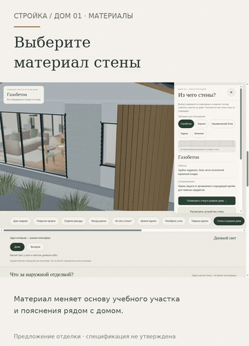

Материал выбран — пояснение рядом.
Карточка под домом следует выбранной стене, покрытию кровли или фасаду. Преимущества, ограничения и теплозащита видны сразу; факторы сметы и вопросы специалисту раскрываются отдельно.
Открыть анимированную GIF-версию · Карточка материала крупно
Карточка на телефоне крупно
Если видео не открывается — показать GIF здесь

Открыть интерактивный прототип →
Предыдущий этап: разборка по слоям →
Монтаж настоящих экранов прототипа 23, не непрерывная запись и не замер FPS. Образец в модели не означает выбор для проекта; нерешённые слои отмечены отдельно. Сведения предварительные, техническую проверку со специалистами ещё предстоит выполнить. Цены не рассчитаны. Физический iPhone/Safari не проверен. Рабочий сайт и сервер не менялись.